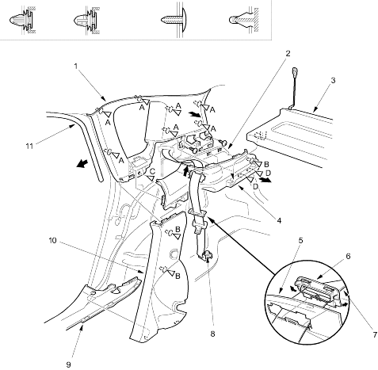

| Fastener Locations | |||||
A  : Clip, 7 : Clip, 7 |
B : Clip, 3
(White) |
C : Clip, 1 |
D : Clip, 2 |
||
 |
|
||||
Interior Trim
|
20-207 |
NOTE:
Remove the trim as shown.
Install the trim in the reverse order of removal and note these items:
| Fastener Locations | |||||
| A : Clip, 7 |
B : Clip, 3
(White) |
C : Clip, 1 |
D : Clip, 2 |
||
 |
|
||||